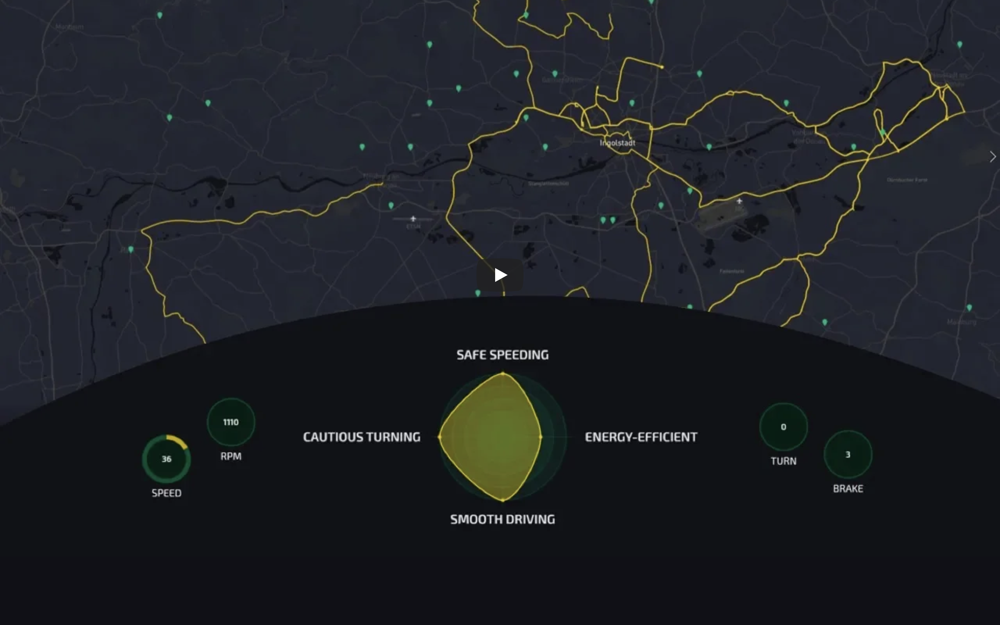
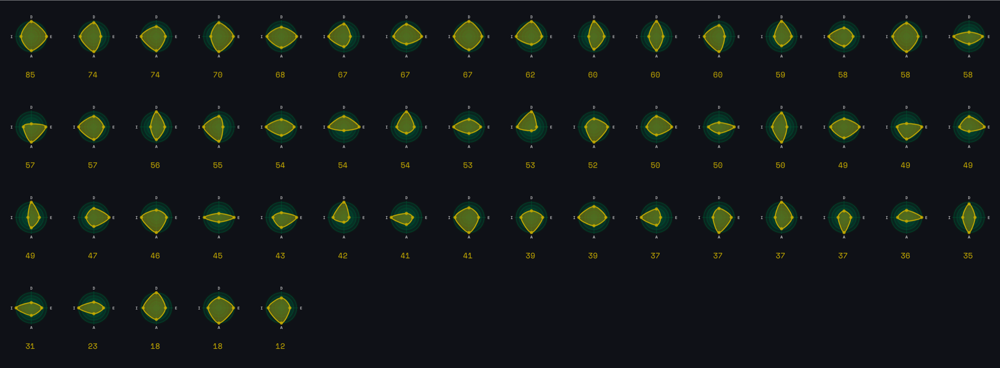

driving DNA
-
Nowadays, cars record several thousands of signals using controller area network (CAN) bus technology and provide real-time information on the car, the driver, and its surrounding environment.
We use these data to characterize a driver's behavior through a Driving DNA score. 53 drivers performed more than 2,000 trips in a wide scenario of road types and open traffic conditions. -
Type
Tools
RoleCommercial at MIT Senseable City Lab
d3.js, Mapbox, HTML, CSS, Javascript
Data Visualization-
Description
-
What can we learn about the driver and the environment by analyzing the large amounts of real-time data generated by a car?
-
At a larger scale, the car’s sensors can be used to collect precise urban data. For example, the temperature sensors and the wiper activity can inform weather conditions at a finer data granularity than the traditional fixed weather stations.
Using the car’s accelerometer and brake sensors, we can estimate road quality. This information is not only useful for real-time alerts, but also to systematically identify dangerous portions of the road network.
-
Screenshots
 

-